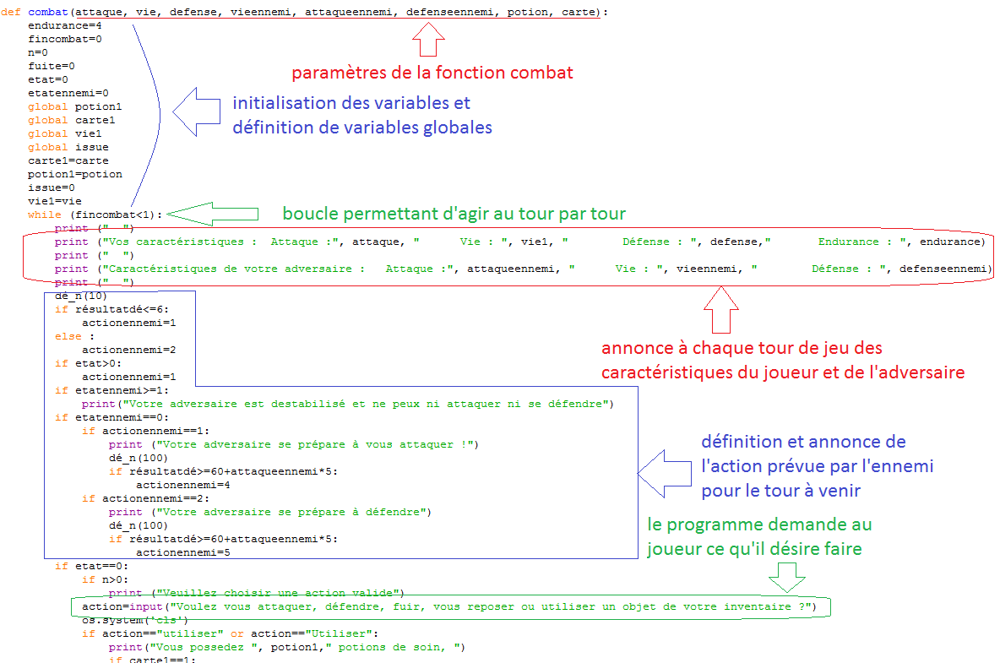

Vous pouvez télécharger ci-dessous le rapport .pdf détaillé, présenté lors de notre soutenance.
TéléchargerVous pouvez télécharger ci-dessous le jeu (fichier.py) dans son état le plus abouti.
TéléchargerSujet
Lors de mon année de terminale S, dans le cadre de l'option Informatique et Sciences du Numérique, nous avons travaillé en trinôme pendant 6 mois sur un projet de jeu textuel en Python.
Le Jeu
Nous avons choisi de développer un jeu textuel de role-play où le joueur incarne un héros, piégé dans un manoir. Son but est alors de trouver le moyen de sortir de ce manoir. Il comporte 3 étages : un sous sol, le rez-de chaussée et l'étage, dans lesquels se trouvent plusieurs pièces. Le joueur doit entrer au clavier l'action qu'il souhaite effectuer (se déplacer dans une autre pièce, observer la pièce dans laquelle il se trouve, utiliser ou ramasser des objets ...)

| Capture d'écran du jeu
Lorsqu'il change de pièce, un dé virtuel est lancé pour définir s'il est attaqué par un monstre ou non. Dans le premier cas, un combat commence. Il se déroule au tour par tour sous un principe ressemblant au pierre, feuille, ciseau. Le joueur peut soit attaquer, soit se défendre pour étourdir son ennemi en cas d'attaque de celui-ci, se reposer pour récuperer des points d'endurance (nécessaires pour attaquer) ou utiliser un objet. Un dé virtuel est alors lancé pour définir l'action de l'ennemi. Si les points de vie du joueur descendent en dessous de 1, il meurt et doit recommencer le jeu, si les points de vie de l'ennemi descendent en dessous de 1, le joueur remporte le combat et gagne un point d'expérience, lui permettant par la suite de gagner un niveau et d'augmenter ses compétences (points de vie, de défense, ou d'attaque).
| Code correspondant au combat